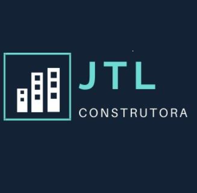
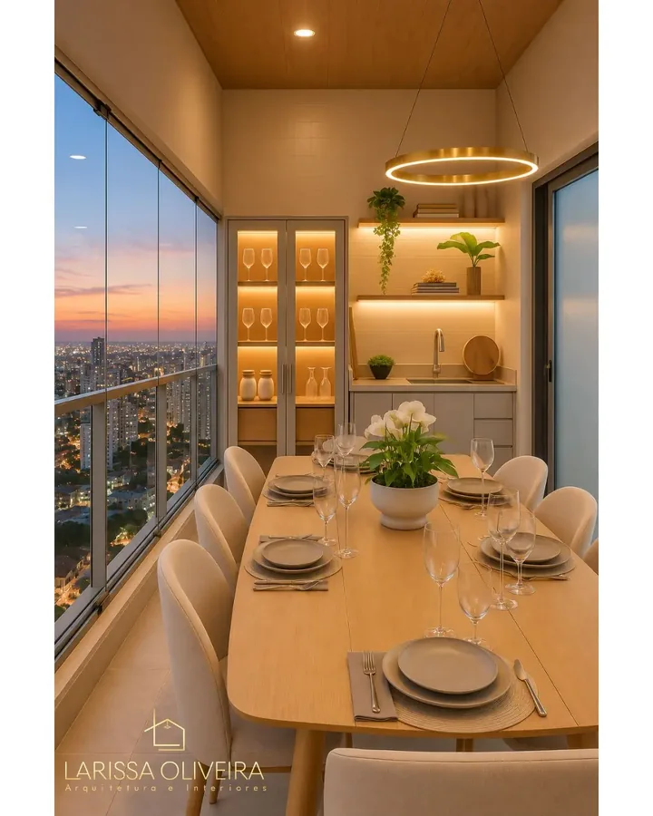

Um terreno e uma ideia de casa.
Construir do zero, pensando nos espaços e na rotina que você quer ter.

São José do Rio Preto e Monte Alto
Arquitetura e engenharia juntas pra construir do zero ou transformar a casa em que você vive. Do projeto à execução, conforme o que sua obra precisa.

A casa que faz sentido hoje pode ser diferente da que você precisava ontem. O primeiro passo é entender o que mudou na sua vida.
Construir do zero, pensando nos espaços e na rotina que você quer ter.
Adaptar uma casa comprada, repensar os ambientes e trazer a personalidade da família.
Ampliar os espaços, mudar a área de lazer ou criar um novo lugar pra trabalhar.
O olhar da arquitetura e a experiência da engenharia se encontram pra entender o que você quer fazer e o que precisa entrar no serviço.
Layout, ambientes, materiais e detalhes pensados pro uso da casa, com projeto definido antes da execução.
Projeto, execução e acompanhamento conforme o escopo da casa e o estágio em que você está.
Transformações em uma casa existente, da mudança de um ambiente à ampliação de espaços.
Já tem um projeto de outro arquiteto? A JTL também pode conversar sobre execução e acompanhamento, respeitando a autoria e o escopo acordado.
Um recorte do projeto de interiores Alameda Iguatemi. Marcenaria, iluminação e ambientes desenhados pra unir uso e personalidade.
Imagens publicadas do projeto. Estágio de execução a confirmar com a equipe.
Na reunião, Larissa contou sobre uma família que buscou ampliação e transformação da área gourmet, com projeto de interiores e execução contratados.
Case em preparação: aguardando fotos correspondentes e estágio da obra.Outra família precisava adaptar a casa pra nova rotina, com escritório e renovação da fachada.
Case em preparação: aguardando fotos correspondentes e estágio da obra.A JTL nasceu em Joinville e traz uma trajetória que une canteiro, projeto e relacionamento com quem vai viver na casa.
Arquitetura e interiores
Vinda de uma família de construtores, encontrou na arquitetura o caminho pra trabalhar com ambientes e pessoas. Retomou a carreira após a maternidade e apresentou seu trabalho na Mostra Arq Design 2025.
Engenharia civil e obra
Começou como ajudante de pedreiro, passou pelo trabalho de pedreiro e estagiário e se tornou engenheiro civil. Sua trajetória inclui obras verticais e a criação da JTL, com foco atual em construção e reforma residencial.
Larissa e Tiago contam como entendem a realidade e o desejo de cada cliente, pra participar da construção de uma casa que faça sentido pra sua vida.
Mensagens reais compartilhadas pela equipe. Toque em um depoimento pra ampliar e ler a conversa.
Da primeira conversa à entrega, cada etapa é alinhada com você. O caminho depende do que sua casa precisa e do serviço contratado.
A gente conversa sobre sua rotina, o que você quer construir ou mudar, a localização e o investimento que tem em mente.
Você recebe uma proposta com os serviços, as responsabilidades e as condições. Com tudo alinhado, a gente formaliza a contratação.
Se o projeto fizer parte da contratação, a gente desenvolve as soluções com você. Pra obra, alinhamos etapas, materiais e cronograma antes de começar.
Na obra, a equipe acompanha o andamento e conversa com você sobre as decisões de cada etapa, conforme o escopo contratado.
No final, a gente confere o que foi combinado, revisa os detalhes e entrega o projeto ou a obra com as orientações necessárias.
Construir, reformar ou ampliar começa por entender o que você precisa. Conte pra JTL o que tá nos seus planos.
Conversar com a JTL no WhatsAppSão José do Rio Preto e Monte Alto, SP
Instagram da JTLInstagram da LarissaWhatsApp recuperado do perfil público. Número e abrangência de atendimento serão reconfirmados antes da publicação.